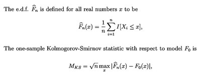
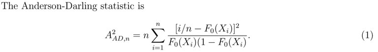

Beware the Kolmogorov-Smirnov test!
Eric D. Feigelson & G. Jogesh Babu
Center for Astrostatistics, Penn State University
The Kolmogorov-Smirnov (KS) test is used in over 500 refereed papers each year in the astronomical literature. It is a nonparametric hypothesis test that measures the probability that a chosen univariate dataset is drawn from the same parent population as a second dataset (the two-sample KS test) or a continuous model (the one-sample KS test). The test is based on the KS statistics that measures the supremum (greatest) distance between the empirical distribution function (EDF) of a univariate dataset and the comparison step function of the second dataset (or its cumulative distribution function). In both cases, the underlying population distribution is assumed to be continuous.

In many ways, the KS test seems fantastic for astronomical use. Its strengths include:
- The test is distribution-free, under a continuity assumption for the univariate population/model distribution, giving valid probabilities for any underlying distribution of the original and comparison dataset. This is particularly valuable for astronomy, as we usually do not know the mathematical distribution of observed properties of planets, stars, galaxies, and so forth.
- It can be universally applied without restriction to any scientific problem. For example, there is no restriction on the size of the sample,
- Critical values of probabilities are widely available, with asymptotic formulae for large samples (roughly n > 30) and tabulated values for small samples.
- The one-sample KS test can serve as a goodness-of-fit test following regression or other procedure. This is critically important in scientific inference as a link between astronomical data and astrophysical theory.
- The statistic is easy to compute, readily understood graphically, and familiar to nearly all astronomers.
But the apparent simplicity of the KS test is misleading in several ways, The first point below shows that, even when valid to apply, it is often not very sensitive in establishing distances between two distributions, and a similar EDF-based test gives a better performance. The later points below give situations where astronomers use the KS test in situations for which it is not designed, arriving at incorrect probabilities for the desired hypothesis test.
- Anderson-Darling test. The KS test is most sensitive when the EDFs differ in a global fashion near the center of the distribution. But if there are repeated deviations between the EDFs, or the EDFs have (or are adjusted to have) the same mean values, then the EDFs cross each other multiple times and the maximum deviation between the distributions is reduced. The Cramer-von Mises (CvM) test that measures the sum of square deviations between the EDFs treats this case well. But both the KS and CvM statistics are insensitive when the differences between the curves is most prominent near the beginning or end of the distributions. This is because, by construction, the EDFs converge to 0.0 and 1.0 at the ends and any deviations must be small. The Anderson-Darling (AD) test was developed in the 1950s as a tail-weighted CvM test to overcome this deficiency. In extensive tests, it is always more sensitive than the KS test. It is nonparametric and distribution free, so it can always be applied. The distribution of the AD statistics for small samples is complicated, and computational algorithms have only recently been developed. This has impeded the promulgation of the method in astronomy and other fields. Critical probability values of the AD test can be computed using function ad.test in CRAN package nortest (and several other CRAN packages) in the R statistical software environment or scipy.stats.anderson and scipy.stats.anderson_ksamp functions in Python.

2. KS test probabilities are wrong if the model was derived from the dataset. This constraint may seem strange. An astronomer often seeks a model that fits a chosen dataset, with best fit parameters chosen by least squares regression, maximum likelihood estimation, or Bayesian inference. It then seems natural to evaluate the goodness-of-fit of the model using the KS test. However, the theory underlying the KS and similar EDF-based tests require independence between the curves under consideration. The model must be derived from another dataset, or from external astrophysical considerations, for the standard KS test probabilities to be applied. Fortunately, the KS (or better, AD) statistic can still be computed, and the significance level of the difference between the EDF curves can be estimated by bootstrap resamples of the original dataset. Bootstrap resampling is conceptually and computationally simple, and the theory underlying the bootstrap guarantee that the resulting significance levels are unbiased for a wide range of situations.
3. The KS test can not be applied in two or more dimensions. Astronomers often have datasets with points distributed in a plane or higher dimensions, rather than along a line. Several papers in the astronomical literature purport to present a two-dimensional KS test, and one is reproduced in the famous volume Numerical Recipes. However, no EDF-based test (this includes KS, AD and related tests) can be applied in two or higher dimensions, because there is no unique way to order the points so that distances between well-defined EDFs can be computed. One can construct a statistic based on some ordering procedure, and then compute the supremum distances between two datasets (or one dataset and a curve). But the critical values of the resulting statistic are not distribution-free. However, again the bootstrap can come to the rescue, and significance levels for the particular multidimensional statistic and the particular dataset under study can be numerically computed. CRAN package cramer provides an example of this approach for the 2-dimensional Cramer-von Mises test.
In summary, we recommend that astronomers replace the Kolmogorov-Smirnov test with the similar, but more sensitive, Anderson-Darling test. Either test can be with standard tabulated critical values for comparison with an independent dataset or preselected model. Be cautious when using the tabulated probabilities of the KS or AD tests, as they may be inapplicable in some situations, such as comparing two mutually dependent distributions. We recommend that the distribution of the KS or AD statistic should be confirmed with bootstrap resampling. Bootstrap resampling, and cautious interpretation, are also needed when constructing ad hoc statistics related to the KS test in two or more dimensions.
References
General textbooks:
Conover, W, J. Practical Nonparametric Statistics (1999) 3rd ed, Wiley
Comparisons of KS, CvM and AD tests:
Stephens, M.A. (1974), EDF statistics for goodness of fit and some comparisons, J. Amer. Stat. Assn., 69, 730-737
Hou, A., Parker, L. C.. Harris, W. E.. Wilman, D. J. (2009), Statistical Tools for Classifying Galaxy Group Dynamics, Astrophys. J., 702, 1199-1210
Anderson-Darling test critical values:
http://math.usm.my/bulletin/pdf/v29n1/v29n1p2.pdf
http://www.jstor.org/stable/pdfplus/2286009.pdf
http://www.jstatsoft.org/v09/i02/paper
http://cran.r-project.org/web/packages/ADGofTest/ADGofTest.pdf
https://cran.r-project.org/web/packages/kSamples/kSamples.pdf
Limitations of the KS test:
Babu, G. J. & Rao, C. R. (2004) Goodness-of-fit tests when parameters are estimated, Sankhya, 66, 63074
Lilliefors, H. W. (1969) On the Kolmogorov-Smirnov test for the exponential distribution for mean unknown, J. Amer. Stat. Assn., 64, 387-389
Simpson, P. B. (1951) Note on the estimation of a bivariate distribution function, Annals Math. Stat., 22, 476-478
Discussion of goodness-of-fit methods:
D'Agostino, R. B. & Stephens, M. A., eds. (1986) Goodness-of-Fit Techniques, Marcel Dekker
Huber-Carol, C., Balakrishnan, N., Nikulin, M. S. & Mesbah, M., eds. (2002) Goodness-of-Fit Tests and Model Validity, Birkhauser
Discussions of these issues by us:
G. J. Babu & E. D. Feigelson (2006) Astrostatistics: Goodness-of-fit and all that!, in Astronomical Data Analysis Software and Systems XV (eds. C. Gabriel et al.), ASP Conf. #351, 127
Feigelson, E. D. & Babu, G. J. (2012) Modern Statistical Methods for Astronomy with R Applications, Cambridge Univ Press (Chpt 3)